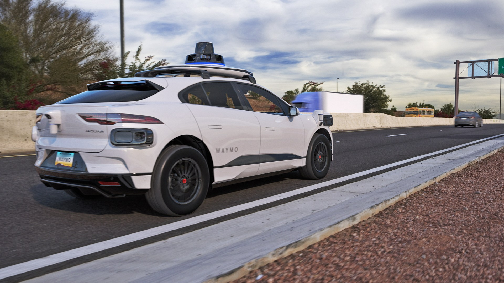

DMV Калифорнии (департамент транспортных средств) ввел ограничение, которое вступило в силу 11 ноября 2026 года: роботакси Waymo больше не могут выезжать ни на одно скоростное шоссе штата. В официальном заявлении ведомства сказано, что операции Waymo на шоссе представляют «неминуемую угрозу общественной безопасности», а запреты продержатся до тех пор, пока компания не докажет, что устранила причины. Поводом стали два свежих инцидента в районе Сан-Франциско: роботакси заехало в активную закрытую стройзону на трассе US-101 у Берлингейма, а на хайвее 280 отдельная машина Waymo неудачно пересеклась с патрульными автомобилями CHP.
DMV прямо подчёркивает: случай не единичный — у Waymo «повторяющиеся заезды в активные стройзоны». Летопись проблем тянется давно: ещё в июне компания отзывала около 3900 роботакси из-за программной ошибки, позволявшей въезжать в закрытые строительные зоны на шоссе, а в мае уже сама приостанавливала шоссе-рейсы по всем рынкам, чтобы починить софт. Рейсы вернули в конце июля — и вот теперь регулятор вмешался сам, впервые в таком масштабе.
Шоссе — кровеносные артери Waymo: без них робо-такси вынуждены петлять по обычным городским улицам, поездки длиннее, а тарифы выше — поездки Waymo и так в среднем дороже обычных Uber и Lyft. Компания сейчас добровольно приостановила шоссе-операции во всех своих городах, чтобы «пересмотреть характеристики», обычные городские поездки продолжают работать. «Безопасность — основа всего, что мы делаем», — заявил представитель Waymo Крис Паппас. Отдельного официального анонса на блоге компании нет: публичная позиция ограничена этим комментарием для прессы.